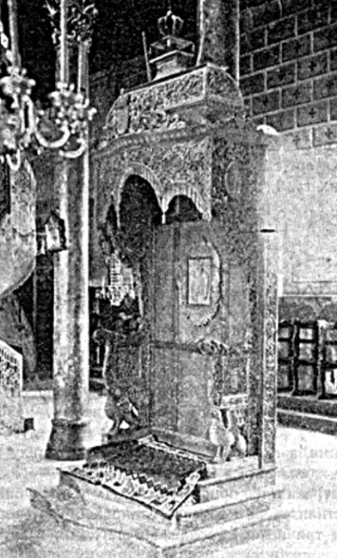
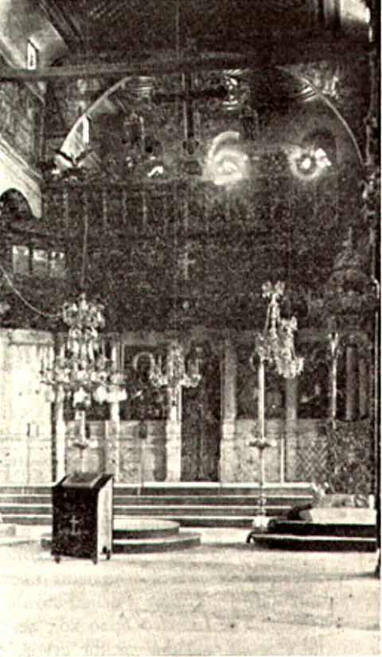

Povijest · 1944
Detalji crkve Sv. Bogorodice
13 fotografija unutrašnjosti katedralne crkve Sv. Bogorodice. Više u Kršćanski hramovi.

Unutrašnjost Sv. Bogorodice - katedralne crkve. Lijevo je propovjedaonica u dubokom rezu, a desno, uz stup bliže oltaru, arhijerejsko prijestolje.

Sjeverni brod hrama s propovjedaonicom i
kraljevsko prijestolje.

Južni brod s Arhijerejskim prijestoljem.

Propovjedaonica, izrađena u umjetničkom drvorezu 1838. godine, i stube uz nju.

Arhijerejsko prijestolje u crkvi Sv. Bogorodice,
izrađen 1838. godine.


Kraljevsko prijestolje u hramu.


Srednji brod hrama Sv. Bogorodice s ikonostasom i Arhijerejskim prijestoljem.

Gornji dio srednjeg broda hrama sa slijepom kupolom u stropu.

Gornji dio ikonostasa (u dubokom rezu) izrađen 1838. godine od orahova drva, a donji dio od bijelog mramora.

Zapadna strana sa ženskom crkvom (na galeriji).

Pogled na stupove i zid srednjeg broda hrama (sjeverna strana).

Desna strana mramornog ikonostasa s ikonama Krista Spasitelja i Sv. Ivana Krstitelja.

Lijeva strana mramornog ikonostasa s ikonama Presvete Bogorodice i njezina Rođenja.